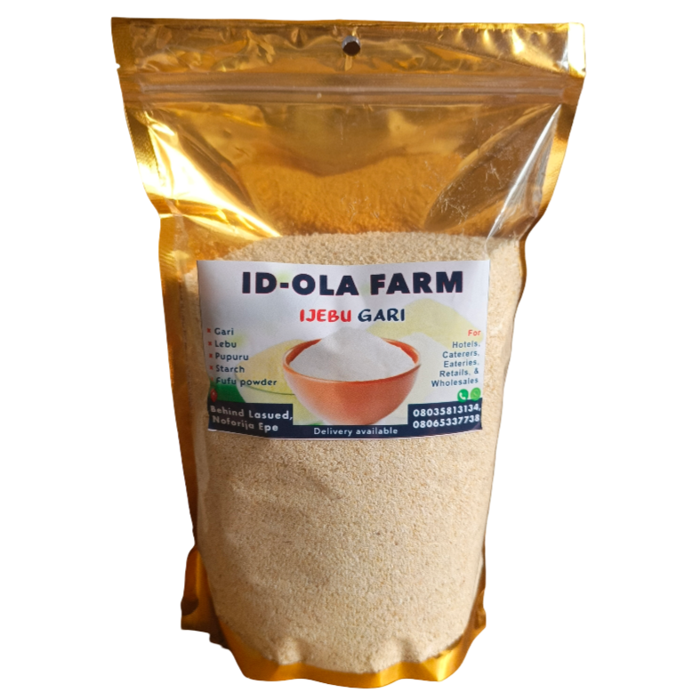

White Ijebu Garri
Available in different sizes


White Garri
Our white garri is carefully processed using clean cassava and hygienic methods to ensure a dry, crunchy, and fresh product. It is well fried and properly sieved to remove unwanted particles, giving it a smooth texture that is pleasant to eat.
This garri is stone-free and sand-free, which means you can soak or drink it with confidence. It does not contain excess moisture, so it stays fresh longer and does not develop a sour smell when stored properly.
Our white garri is suitable for drinking, soaking, and making smooth, lump-free eba. It swells well when prepared and has a natural taste without bitterness and let not forget about the great sour taste which comes from drinking ijebu garri.
We pay close attention to clean processing, proper drying, and neat packaging to reduce contamination and maintain quality from production to delivery. No artificial additives are added.
The white garri is available in various sizes, from 1kg to 50kg, making it suitable for different needs and preferences. Whether you need a small quantity for personal use or a larger quantity for commercial purposes, we have you covered.
Ideal for:
Daily meals
Families and households
Retailers and food vendors
Just click on the order on whatsApp below to place your order!